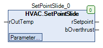
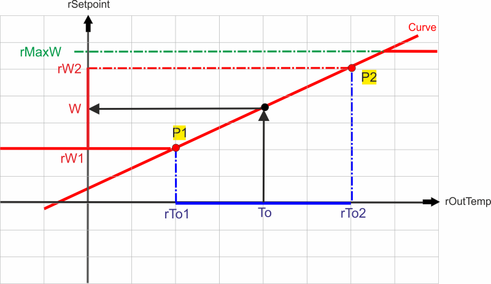

SetPointSlide (FB)¶
FUNCTION_BLOCK SetPointSlide
Kurzbeschreibung¶
Erzeugung einer Solltemperatur in Abhängigkeit von der AussentemperaturPrinzip: Lineare VerschiebungTypische Anwendung: Anpassung einer Raumsolltemperatur im Sommerbetrieb ( Energieeinsparung )
Darstellung¶

Schnittstellen¶
Eingänge¶
Name Datentyp Wertebereich Initialwert Funktion rOutTemp REAL 0.0 Aktuelle Aussentemperatur
Ausgänge¶
Name Datentyp Wertebereich Initialwert Funktion rSetPoint REAL Aktuelle Solltemperatur bOverThrust BOOL Anzeige - Schiebung ( FALSE = nicht aktiv, TRUE = aktiv )
Sollwerte / Parameter¶
Name Datentyp Wertebereich Initialwert Funktion rDeadZone REAL 2 Totzone zwischen Ein- und Ausschaltpunkt für den Ausgang bOverThrust am Anfang der Schiebung rMaxW REAL 25.0 Maximale absolute Solltemperatur rW2 REAL 25.0 Solltemperatur am Aussentemperatur-Punkt 2 rTo2 REAL 40.0 Aussentemperatur am Aussentemperatur-Punkt 2 rW1 REAL 20.0 Solltemperatur am Aussentemperatur-Punkt 1 rTo1 REAL 30.0 Aussentemperatur am Aussentemperatur-Punkt 1 rManValue REAL 0.0 Handübersteuerung: Handwert eManModeN eMANNUM eMANNUM.Auto, eMANNUM.Man Handübersteuerung: Betriebsart
Funktionsbeschreibung¶
Allgemeines¶
Dieser Funktionsbaustein dient zur Erzeugung einer Solltemperatur rSetPoint in Abhängigkeit von der aktuellen Aussentemperatur rOutTemp.
Die Zuordnung wird durch eine durch zwei Punkte ( Aussentemperatur-Punkt 2: rTo2 und rW2, Aussentemperatur-Punkt 1: rTo1 und rW1 ) definierte lineare Funktion hergestellt.
Die Solltemperatur rSetPoint wird nach oben durch den absoluten Maximalwert rMaxW begrenzt.
Die Solltemperatur rSetPoint wird nach unten durch die Solltemperatur am Aussentemperatur-Punkt 1 rW1 begrenzt.
Die Solltemperatur rSetPoint kann durch die Betriebsart eManModeN ( eManModeN = eMANNUM.Man ) auf den Festwert rManValue fixiert werden.
Bei jeder Umschaltung der Betriebsart in den Handbetrieb ( eManModeN = eMANNUM.Man ) wird der Handwert rManValue durch die aktulle Solltemperatur rSetPoint ersetzt.
Nähert sich die Aussentemperatur am Aussentemperatur-Punkt 1 rTo1 der Aussentemperatur am Aussentemperatur-Punkt 2 rTo2 auf weniger als 0.5°C an, so wird
der Aussentemperatur-Punkt 1 rTo1 automatisch auf eine Differenz von 0.5°C korrigiert ( Vermeidung von zu steilen Kennlinien ).
Der Aussentemperatur-Punkt 1 rTo1 ist somit wertmaessig stets kleiner als der Aussentemperatur-Punkt 2 rTo2.
Ein Temperatur-Unterschied von 6°C zwischen der Aussentemperatur und der Solltemperatur kommt meistens zur Anwendung.

Anzeige - Schiebung bOverThrust¶
Bedingung bOverThrust Hinweise rOutTemp > rTo1 TRUE Sollwertschiebung ist aktiv rOutTemp < ( rTo1 - rDeadZone ) FALSE Sollwertschiebung ist nicht aktiv
Visualisierung¶
Codesys¶
- InOut:
Scope Name Type Initial Comment Input rOutTemp REAL 0 Aktuelle Aussentemperatur rDeadZone REAL 2 Totzone zwischen Ein- und Ausschaltpunkt für den Ausgang bOverThrust am Anfang der Schiebung rMaxW REAL 25 Maximale absolute Solltemperatur rW2 REAL 25 Solltemperatur für Aussentemperatur-Punkt 2 rTo2 REAL 40 Aussentemperatur für Aussentemperatur-Punkt 2 rW1 REAL 20 Solltemperatur für Aussentemperatur-Punkt 1 rTo1 REAL 30 Aussentemperatur für Aussentemperatur-Punkt 1 rManValue REAL 0 Handübersteuerung: Handwert eManModeN eManNum eManNum.Auto Handübersteuerung: Betriebsart Output rSetpoint REAL Aktuelle Solltemperatur bOverthrust BOOL Anzeige - Schiebung ( FALSE = nicht aktiv, TRUE = aktiv )